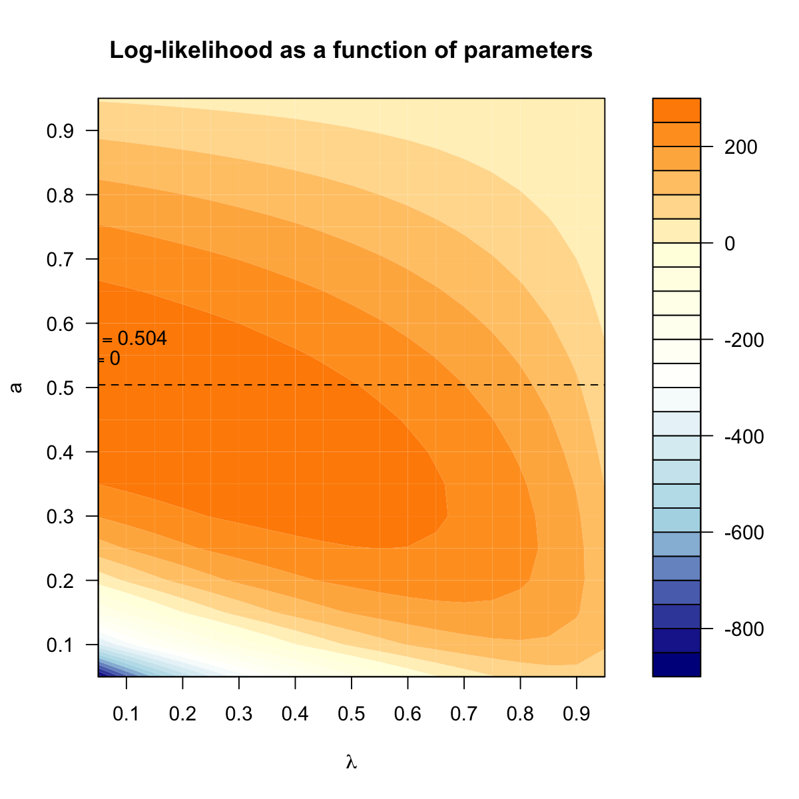
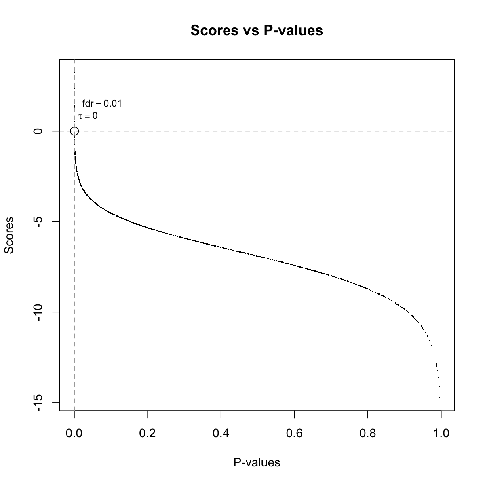
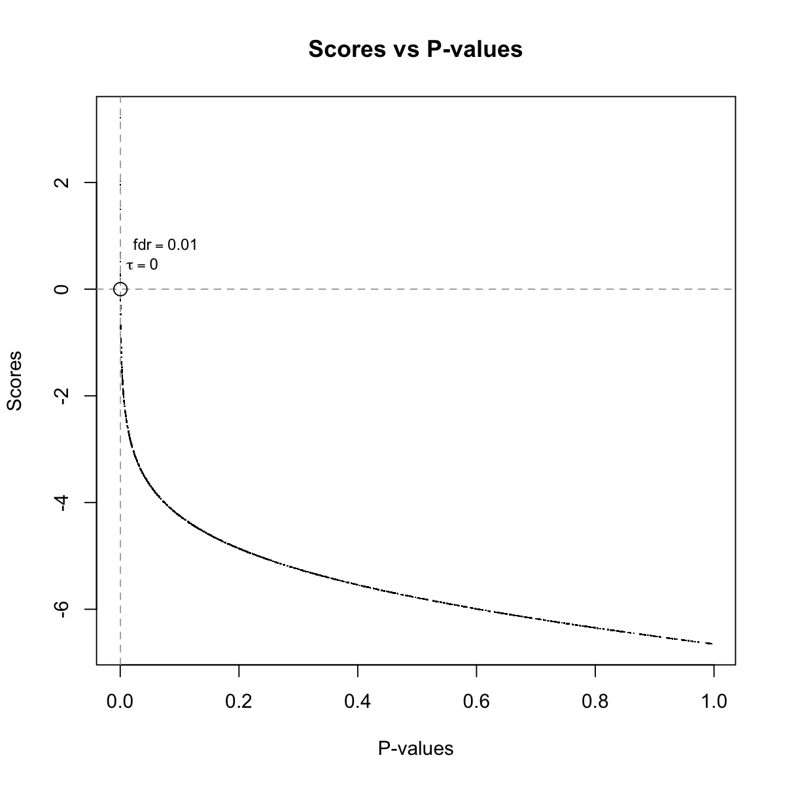

dBUMscore is supposed to take as input a vector of
p-values, which are transformed into scores according to
the fitted beta-uniform mixture model. Also if the FDR
threshold is given, it is used to make sure that p-values
below this are considered significant and thus scored
positively. Instead, those p-values above the given FDR are
considered insigificant and thus scored negatively.
dBUMscore(fit, method = c("pdf", "cdf"), fdr = NULL, scatter.bum = T)
scores: a vector of scores The transformation from the input p-value x to the
score S(x) is based on the fitted beta-uniform
mixture model with two parameters \lambda and
a: f(x|\lambda,a) = \lambda +
(1-\lambda)*a*x^{a-1}. Specifically, it considers the
log-likehood ratio between the signal and noise compoment
of the model. The probability density function (pdf) of the
signal component and the noise component are
(1-\lambda)*a*(x^{a-1}-1) and \lambda +
(1-\lambda)*a, respectively. Accordingly, the cumulative
distribution function (cdf) of the signal component and the
noise component are \int_0^x (1-\lambda)*a*(x^{a-1}-1)
\, \mathrm{d}x and \int_0^x \lambda+(1-\lambda)*a \,
\mathrm{d}x. In order to take into account the
significance of the p-value, the fdr threshold is
also used for down-weighting the score. According to how to
measure both components, there are two methods implemented
for deriving the score S(x):
S(x) =
log_2\frac{(1-\lambda)*a*(x^{a-1}-1)}{\lambda+(1-\lambda)*a}
-
log_2\frac{(1-\lambda)*a*(\tau^{a-1}-1)}{\lambda+(1-\lambda)*a}
= log_2\big(\frac{x^{a-1}-1}{\tau^{a-1}-1}\big). For the
purpose of down-weighting scores, it must ensure
log_2\frac{(1-\lambda)*a*(\tau^{a-1}-1)}{\lambda+(1-\lambda)*a}
\geq 0 , that is, the constraint via \tau \leq
\big(\frac{\lambda+2*a*(1-\lambda)}{a*(1-\lambda)}\big)^{\frac{1}{a-1}}
S(x) = log_2\frac{\int_0^x
(1-\lambda)*a*(x^{a-1}-1) \, \mathrm{d}x}{\int_0^x
\lambda+(1-\lambda)*a \, \mathrm{d}x} -
log_2\frac{\int_0^\tau (1-\lambda)*a*(\tau^{a-1}-1) \,
\mathrm{d}x}{\int_0^\tau \lambda+(1-\lambda)*a \,
\mathrm{d}x} =
log_2\frac{(1-\lambda)*(x^{a-1}-a)}{\lambda+(1-\lambda)*a}
-
log_2\frac{(1-\lambda)*(\tau^{a-1}-a)}{\lambda+(1-\lambda)*a}
= log_2\big(\frac{x^{a-1}-a}{\tau^{a-1}-a}\big). For the
purpose of down-weighting scores, it must ensure
log_2\frac{(1-\lambda)*(\tau^{a-1}-a)}{\lambda+(1-\lambda)*a}
\geq 0 , that is, the constraint via \tau \leq
\big(\frac{\lambda+2*a*(1-\lambda)}{1-\lambda}\big)^{\frac{1}{a-1}}
\tau
=\big[\frac{\lambda+(1-\lambda)*a-fdr*\lambda}{fdr*(1-\lambda)}\big]^{\frac{1}{a-1}},
i.e. the p-value corresponding to the exact fdr
threshold. It can be duduced from the definition of the
false discovery rate: fdr \doteq \frac{\int_0^\tau
\lambda+(1-\lambda)*a \, \mathrm{d}x}{\int_0^\tau
\lambda+(1-\lambda)*a*x^{a-1} \, \mathrm{d}x}. Notably, if
the calculated \tau exceeds the contraint, it will be
reset to the maximum end of that constraint # 1) generate an vector consisting of random values from beta distribution x <- rbeta(1000, shape1=0.5, shape2=1) # 2) fit a p-value distribution under beta-uniform mixture model fit <- dBUMfit(x)A total of p-values: 1000 Maximum Log-Likelihood: 402.7 Mixture parameter (lambda): 0.000 Shape parameter (a): 0.458 # 3) calculate the scores according to the fitted BUM and fdr=0.01 # using "pdf" method scores <- dBUMscore(fit, method="pdf", fdr=0.01)# using "cdf" method scores <- dBUMscore(fit, method="cdf", fdr=0.01)
dBUMfit
Fang H, Gough J. (2014) DNET: dynamic networks via an integrative analysis of network, expression and ontology data. R package version 1.0.0. http://dnet.r-forge.r-project.org
){kind=link}
){kind=link}
){kind=link}